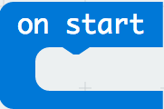
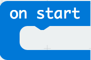

Projektni zadatak – Alarm¶
Alarmi su uređaji koji komuniciraju s središnjom upravljačkom jedinicom putem elektroničke mreže i šalju signale o mogućim pokretima i promjenama, koje detektiraju senzori.
Tipični kućni alarmni sustav sadrži sljedeće komponente:
Upravljačka ploča, koja je zapravo središnja upravljačka jedinica alarmnog sustava
Senzori na vratima, prozorima ili bilo komadu namještaja
Senzori pokreta, unutarnji i vanjski
Vrlo glasna sirena ili alarm.
Princip rada vrlo je jednostavan: alarmni sustavi osiguravaju ulazne točke ili mjesta koja omogućavaju pristup kući, stanu ili radnom prostoru, senzore koji komuniciraju s glavnom upravljačkom jedinicom. Senzori se obično nalaze na vratima ili prozorima, ali i na drugim otvorima koji omogućuju pristup iznutra.
Uređaj alarm mora otkriti pokrete, kao i promjene u sobnoj temperaturi i osvjetljenju. Ako se vrata otvore i poraste sobna temperatura ili se poveća intenzitet svjetla, uređaj će se oglasiti.
Da biste stvorili uređaj alarm, morate:
3 Micro:bita
samoljepljiva traka
zvučnik ili slušalice
krokodilke
Da biste stvorili uređaj alarm, prvo morate kreirati fizički uređaj koji se sastoji od Micro:bit-a za ulogu senzora koji detektira pokrete, promjene temperature i osvjetljenja prostorije i Micro:bit za djelovanje kada se u prostoriji pojave promjene (Micro:bit na koji je spojen zvučnik) mora se postaviti oko 10 metara od senzora.
Sada kada smo izgradili uređaj alarm, moramo stvoriti programe za svaki Micro:bit.
Sva tri Micro:bit-a moraju se programirati odvojeno:
1. Jedan ima ulogu otkrivanja pokreta. 2. Drugi se koristi za otkrivanje promjena temperature ili osvjetljenja. 3. Treći se koristi za stvaranje zvuka kada se otkriju gibanje, promjena temperature ili promjena osvjetljenja prostorije.
Korak 1
Idite na https://makecode.microbit.org/.
Prvo ćemo programirati Micro:bit pomoću kojeg ćemo detektirati pokrete.
Korak 2
Napravite novi projekt.
Sada želimo programirati otkrivanje pokreta, točnije, želimo registrirati kretanje pomoću Micro:bit-a.
Kad želimo uspostaviti komunikaciju (koristiti radijsku komunikaciju) između Micro:bit-ova, svi uključeni Micro:bit-ovi moraju pripadati istoj grupi ili koristiti isti ID grupe.
Korak 3
Stvarajući ID grupu, on zapravo stvara prostor u kojem će uređaji komunicirati.
Za izradu ID grupe iz kategorije  povlačimo blok
povlačimo blok  u blok  iz kategorije
u blok  iz kategorije  . U prostor unosimo željeni broj za ID grupe. To može biti bilo koji broj. Ostavit ćemo da bude 1. Tako smo stvorili grupu s ID 1 u kojoj će komunicirati svi Micro:bit-ovi.
. U prostor unosimo željeni broj za ID grupe. To može biti bilo koji broj. Ostavit ćemo da bude 1. Tako smo stvorili grupu s ID 1 u kojoj će komunicirati svi Micro:bit-ovi.
Dio koda koji stvara komunikacijsku skupinu:

Korak 4
U blok  , nalazi se u kategoriji , povucite blok
, nalazi se u kategoriji , povucite blok  iz kategorije
iz kategorije  .
.
U dijelu za uvjet  povucite blok (nalazi se u kategoriji
povucite blok (nalazi se u kategoriji  ).
).
Iz padajućeg izbornika bloka :

izaberete opciju  . Ova opcija registrira pokrete.
. Ova opcija registrira pokrete.

Na temelju postavljanja problema, kada je gibanje registrirano (ili u našem slučaju kada je uvjet ispunjen), pomoću bloka  šaljemo neku vrijednost Micro:bit-u.
šaljemo neku vrijednost Micro:bit-u.
U polje  unosimo broj 5 (može se unijeti bilo koja vrijednost). Da bi senzor odgovorio, točnije detektirao pokrete, postavit ćemo mu da traje određeno vrijeme, neka to bude 3 sekunde (ili 3000 milisekundi). Za to ćemo koristiti blok
unosimo broj 5 (može se unijeti bilo koja vrijednost). Da bi senzor odgovorio, točnije detektirao pokrete, postavit ćemo mu da traje određeno vrijeme, neka to bude 3 sekunde (ili 3000 milisekundi). Za to ćemo koristiti blok  iz kategorije . U polje
iz kategorije . U polje  unosimo 3000ms, što će biti vrijeme kada senzor odgovori na nastalu promjenu.
unosimo 3000ms, što će biti vrijeme kada senzor odgovori na nastalu promjenu.
Korak 5
Klikom na tipku  ili tipku
ili tipku  preuzmite .hex datoteku na vaše računalo. Povlačenjem datoteke na Micro:bit, on je spreman za rad.
preuzmite .hex datoteku na vaše računalo. Povlačenjem datoteke na Micro:bit, on je spreman za rad.
Korak 6
Sada je potrebno programirati Micro:bit za otkrivanje promjena u temperaturi i intenzitetu svjetlosti i te podatke poslati Micro:bit-u kako bi se oglasili. Kako bi Micro:bit-ovi mogli komunicirati, oni trebaju pripadati istoj ID grupi.
Stvorena je grupa s ID 1 u kojoj će svi Micro:bit-ovi komunicirati:
U blok povucite blok iz kategorije . U dijelu za uvjet moramo povući blokove koji definiraju uvjete da je temperatura veća od 30 ili da je intenzitet svjetlosti veći od 150.
Uvjeti mogu biti složeni (stvoreni spajanjem jednostavnih uvjeta).
U našem su slučaju jednostavni uvjeti da je temperatura veća od 30 ili da je intenzitet osvjetljenja veći od 140.
Jednostavne uvjete definiramo u blokovima  .
.
U našem slučaju uvjete definiramo na sljedeći način:
temperatura
 veća od 30:
veća od 30:  .
.intenzitet osvjetljenja
 veći od 150: .
veći od 150: .
Za povezivanje jednostavnih uvjeta koristite logičke operatore (I, ILI, NE) - eng (AND, OR, NOT).
U MakeCode-u su logički operatori prikazani kako slijedi:
 - Povezuje dva uvjeta i kao rezultat vraća Točno ako su oba uvjeta Točna.
- Povezuje dva uvjeta i kao rezultat vraća Točno ako su oba uvjeta Točna.
 - Povezuje dva uvjeta, i kao rezultat vraća Točno ako je barem jedan uvjet Točan.
- Povezuje dva uvjeta, i kao rezultat vraća Točno ako je barem jedan uvjet Točan.
 - Stavlja se ispred jednog uvjeta, i kao rezultat vraća Točno u slučaju da uvjet nije zadovoljen.
- Stavlja se ispred jednog uvjeta, i kao rezultat vraća Točno u slučaju da uvjet nije zadovoljen.
Uvjet za provjeru je li došlo do promjene temperature ili intenziteta osvjetljenja definiran je blokom:

Uvjetni izgled bloka:

Na temelju postavljenog zadatka, kada se registrira promjena temperature ili svjetline, on šalje neku vrijednost Micro:bit-a koristeći blok . U tekstnom polju unosimo broj 10 (može se unijeti bilo koja vrijednost). Da bi senzor odgovorio, točnije detektirao pokrete, postavit ćemo mu da traje određeno vrijeme, neka to bude 3 sekunde (ili 3000 milisekundi). Za to ćemo koristiti blok iz kategorije . U polje unosimo 3000ms, što će biti vrijeme kada senzor odgovori na nastalu promjenu.
Izgled programa kada se utvrdi promjena temperature ili osvjetljenja:

Korak 7
Klikom na tipku ili tipku preuzmite .hex datoteku na vaše računalo. Povlačenjem datoteke na Micro:bit on je spreman za rad.
Korak 8
I na kraju, treći Micro:bit (oglašivač) mora se programirati tako da zvuči glasno kad prima informacije od druga dva Micro:bit-a.
Stvaramo grupu s ID-om 1:
Sljedeći korak je za ovaj Micro:bit primiti informacije (u našem slučaju broj) na osnovu kojih će “reagirati” izdajući zvuk. Za to ćemo iz kategorije povući blok:
U njega ćemo povući blok . U dijelu za uvjet moramo to povući uvjet, koji provjerava prijem brojeva (5, 10) s druga dva Micro:bita.
Upotrebom znaka  , uvodimo još jedan uvjet. U grani gdje je uvjet
, uvodimo još jedan uvjet. U grani gdje je uvjet  i uvjet
i uvjet  , povlačimo blok
, povlačimo blok  (iz padajućeg izbornika biramo
(iz padajućeg izbornika biramo ringtone) iz kategorije  , kojim se reproducira zvuk.
Pored ovog bloka dodajemo i vremenski interval od jedne sekunde.
, kojim se reproducira zvuk.
Pored ovog bloka dodajemo i vremenski interval od jedne sekunde.
Konačni izgled koda:

Napomena: Da bi se audio mogao reproducirati Micro:bit mora biti spojen na zvučnike ili slušalice kako slijedi:

Korak 9
Klikom na tipku ili tipku preuzmite .hex datoteku na vaše računalo. Povlačenjem datoteke na Micro:bit on je spreman za rad.